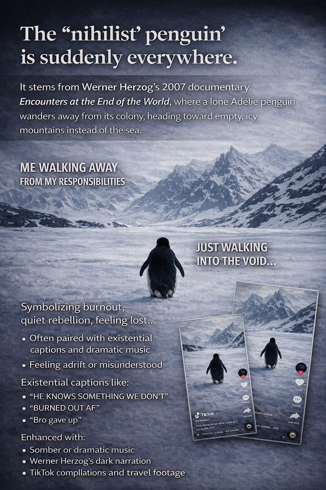

The Nihilist Penguin
A short note on how a scene from Werner Herzog's Encounters at the End of the World became an online symbol of exhaustion, detachment, and the desire to walk away from modern noise.

The example shows how archival media can acquire a second life online: recommendation systems remove a scene from its original context, while repeated editing and circulation turn it into shared emotional shorthand.